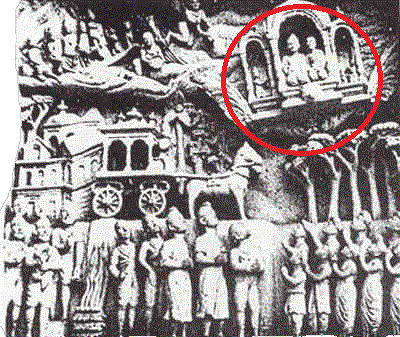

Ancient Transportation & Flying Myths
The history of flight is the history of a dream:-human-kind’s dream to soar through the sky like a bird. Birds seem to fly with so little effort that it was only natural that early attempts to fly would be attempts do emulate birds. Early myths about flight and probably many early attempts involved fashioning wings out of birds' feathers. Since ancient times, however, it was suspected that the mechanism of bird flight was more complicated than it appeared to the naked eye.
-

ANCIENT VIMANAS
Vimāna is a term used to describe mythological flying palaces or chariots described in Hindu texts and Sanskrit epics. The Pushpaka Vimana of the king Ravana (which was taken from Lord Kubera, and returned to him by Rama) is the most quoted example of a vimana. Vimanas are also mentioned in Jain texts.
Read More -
THE COLUMBIAN 'PLANES'
Considered to be well over a thousand years old, this tiny gold object certainly has a similar appearance to a modern aeroplane. Thought to come from a pre-Incan culture, it measures just two inches long.
Read More